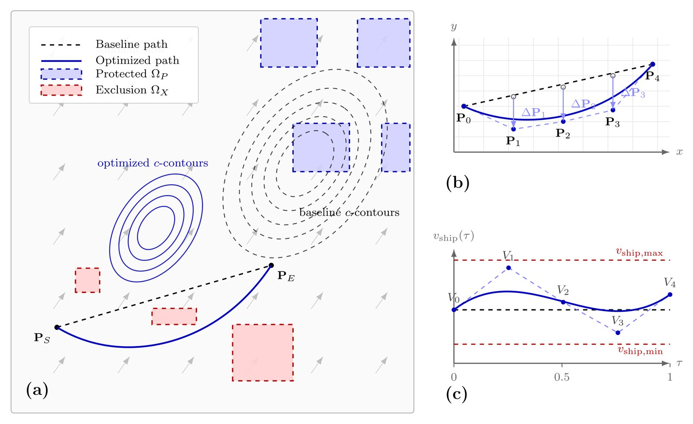
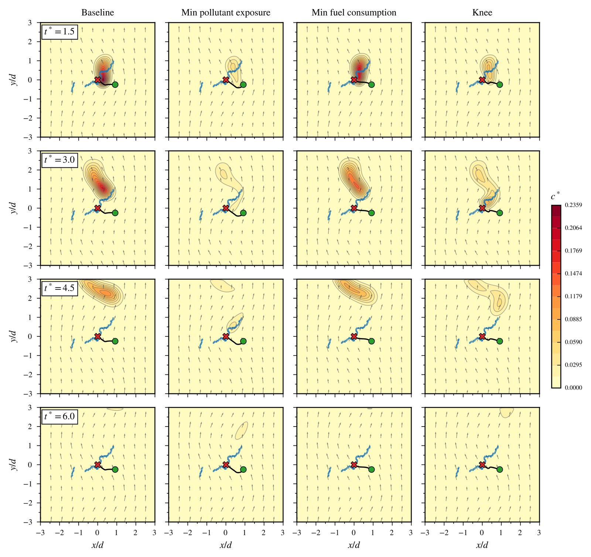
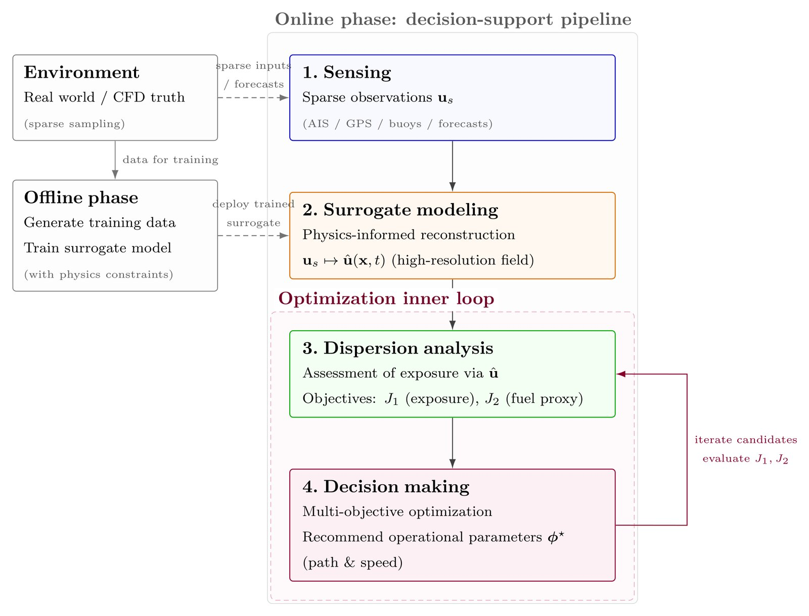
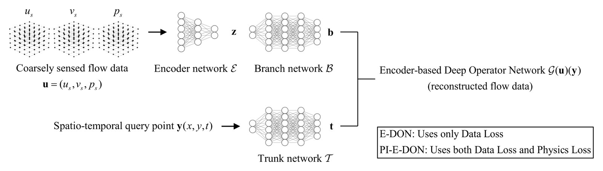
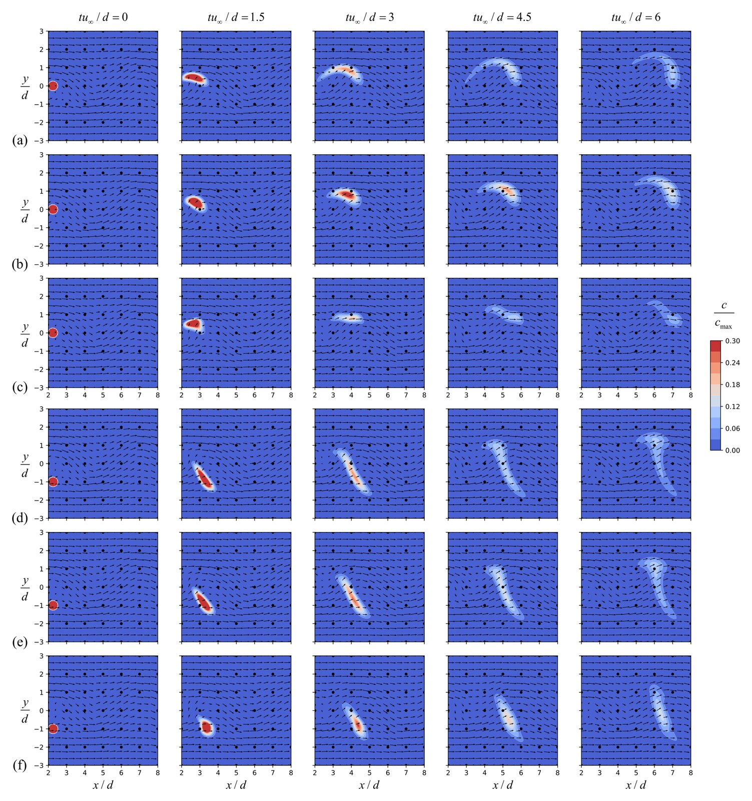
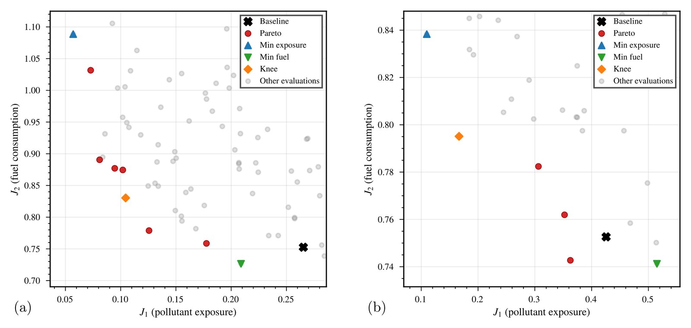
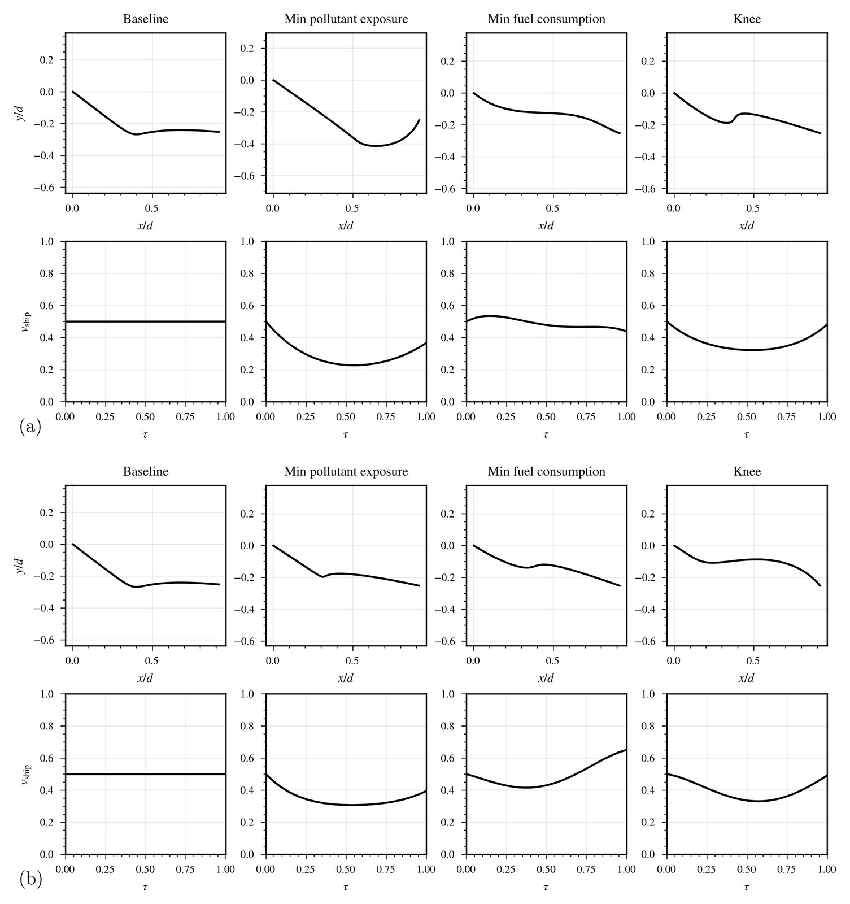

문제 배경
부산에서 선박은 초미세먼지(PM2.5) 배출의 약 51.4%를 차지하는 최대 배출원으로 보고되었다. 기존 저감 전략은 저속 운항으로 총배출량을 줄이는 데 초점을 두어 운항 시간을 늘리며, 불리한 바람 조건에서 발생하는 최대 농도를 직접 다루지 못한다.
본 연구는 운항의 시간 차원을 활용하여, 국지 바람 조건에 맞춰 경로와 속도 분포를 조정함으로써 연료 소비와 보호구역 최대 노출을 동시에 줄이는 방법을 제시하였다.
항만 도시의 선박 배출 대책은 일률적인 감속으로 총배출량을 줄이는 방식이 주를 이루지만, 이는 물류 생산성을 저하시키고 국지 기상에 따른 최대 농도를 줄이지 못할 수 있다. 본 연구는 희소 센서 자료로부터 physics-informed deep operator network(PI-E-DON)로 고해상도 유동장을 복원하고, 오염물질 확산을 실시간으로 예측한 뒤, 다목적 베이지안 최적화(multi-objective Bayesian optimization, MOBO)로 경로와 속도 분포의 Pareto 최적해를 도출하는 틀을 제안하였다. 부산항 인근 사례를 포함한 비정상 층류 시나리오에서 hypervolume을 20–35% 개선하고, 최대 노출을 34–78% 감소시켰다.

배경 유동, 선박 배출, 오염물질 이류·확산, 두 목적함수(J1: 보호구역 최대 농도, J2: 연료 소비 대리 지표)의 관계를 개념 모델로 나타낸다. 유동·확산·탐색은 개념적 재현이며, 수치는 논문 결과를 따른다.

무작위 탐색으로 근사한 개념적 Pareto 해이며, 논문의 qLogEHVI 기반 MOBO가 아니다. Pareto 해를 누르면 해당 경로와 속도 분포가 지도에 표시된다.
산점도의 점은 논문 Table 2의 Pareto 해이며, 주황색은 두 목적함수를 모두 개선한 해이다. 개념 모델은 균일 유입류와 와류열로 구성한 배경 유동, 속도의 세제곱에 비례하는 배출, 가우시안 퍼프(puff)의 이류·확산으로 구성하였다. 출처: J. Yun, S. Park, and D. Kim, Ocean Engineering 362, 126293 (2026).
보호구역의 급성 대기질 악화는 총배출량보다 배출 플룸과 국지 기상의 시공간적 정렬에 의해 결정된다.
부산에서 선박은 초미세먼지(PM2.5) 배출의 약 51.4%를 차지하는 최대 배출원으로 보고되었다. 기존 저감 전략은 저속 운항으로 총배출량을 줄이는 데 초점을 두어 운항 시간을 늘리며, 불리한 바람 조건에서 발생하는 최대 농도를 직접 다루지 못한다.
본 연구는 운항의 시간 차원을 활용하여, 국지 바람 조건에 맞춰 경로와 속도 분포를 조정함으로써 연료 소비와 보호구역 최대 노출을 동시에 줄이는 방법을 제시하였다.
오프라인 단계에서 대리 모델을 학습하고, 온라인 단계에서 (1) 희소 센싱, (2) PI-E-DON 기반 유동장 복원, (3) 오염물질 확산 해석, (4) MOBO 기반 의사결정을 수행한다.





그림: J. Yun, S. Park, and D. Kim, Ocean Engineering 362 (2026) 126293 — 저자 원고(author manuscript) 판본.
감소율은 시나리오별 기준 경로 대비, hypervolume 개선은 초기 설계 집합 대비 값이다 (Table 1).
직선 사례의 기준 경로는 이미 연료 최적이므로 Pareto 해는 주로 J1 방향으로 분포하였으며, 직선·장애물 회피 사례의 노출 감소는 주로 공간적 우회에 의해 달성되고 속도 조절은 부차적이었다. 부산항 인근 사례에서는 경로 편향과 속도 조절을 조합한 해가 통항 제한 구역을 지키면서 노출을 줄였다.
두 유입 풍향에서 hypervolume 개선은 비슷하였으나(+28.2%, +29.5%), 최적화 후 최소 노출은 약 1.9배 차이를 보여(J1 = 0.057, 0.110) 풍향이 달성 가능한 노출의 하한을 결정함을 확인하였다. 노출 감소와 연료 절감을 동시에 달성한 해는 이상화된 개념 검증 결과이며, 현장 규모의 검증이 필요하다.